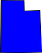

 UTMap
Edit
Toggle Dropdown
Edit with iD
Edit with Rapid
Edit with JOSM
JOSM isn't running…
Edit with JOSM (New layer)
JOSM isn't running…
View in OSM
Example filters
Does this bench have a backrest?
Are bicycle repair services offered here?
Is this pitch lit?
What sport is played here?
What street is this on?
What kind of building is this?
Does this bus stop have a shelter?
Do these places offer takeout?
Does this road have separately mapped sidewalks?
BETA: Explore a tag using color!
Filter
Clear
About
GitHub
GitHub
Mastodon
Mastodon
More
GitHub
GitHub
Mastodon
Mastodon